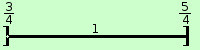

|
sviluppo indicare in ℜ un intorno completo semiaperto a sinistra di ampiezza 2-2 del punto log 0 darne la rappresentazione grafica Prima vedo di trovare i punti su ℜ; log 0 = 1 e 2-2 = 1/4 quindi dal punto 1, sulla retta ℜ devo spostarmi di 1/4 di unita' di misura verso sinistra 1 - 1/4 ed arrivo sul punto 3/4 inoltre, sempre da 1 devo spostarmi di 1/4 di unita' di misura anche verso destra 1 + 1/4 ed arrivo sul punto 5/4 Dovendo l' intorno essere aperto gli estremi non saranno compresi, quindi considero sulla retta ℜ il segmento da 3/4 a 5/4 e metto ai bordi le parentesi quadre, quella a destra con le punte verso l'interno e quella a sinistra con le punte verso l'esterno perche' l'intervallo e' semiaperto a sinistra  |